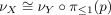
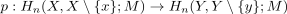
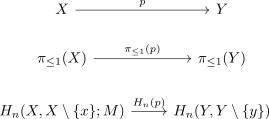
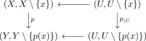
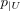
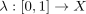
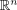
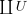
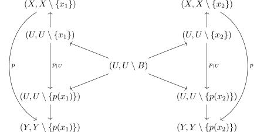

covering map and natural isomorphism of orientation functor
1. Proposition
Let  be a countable sheeted covering map where
be a countable sheeted covering map where  is a manifold
Then there exists a natural transformation
is a manifold
Then there exists a natural transformation

given by


2. Proof
2.1. isomorphism
Consider the maps of pairs

results in the commutaive diagram
Here all other morphisms are isos, either by excision for local homology or

as homeomorph2.2. naturality
Let

be a path w.l.o.g. we may cover by
by  which are homeomorphic to
which are homeomorphic to 
and covered by some
Then
commutes.
Hence naturality follows.